Berlim
Frankfurt
Em Munique que é realizada anualmente a Oktoberfest. April 2, 2014

Munique é uma cidade da Alemanha, capital do estado alemão da Baviera, no sudeste do país. Conta atualmente cerca de 1,3 milhão de habitantes, enquanto a sua região metropolitana, que engloba diversas cidades vizinhas ou próximas a Munique, abriga mais de 2,6 milhões de pessoas
Berlim é uma cidade cosmopolita, moderna e cheia de história. Tudo funciona bem, têm diversas opções de restaurantes e bares, shoppings, parques e museus.
Estive visitando a cidade em março de 2014 e fiquei hospedada no Hotel Indigo berlim – Alexanderplatz. Esse hotel possui ótimo custo beneficio e uma excelente localização. Os funcionários foram muito prestativos e me deram várias dicas de passeios.
Minha estadia na cidade foi curta (2 dias) e infelizmente não consegui visitar todos os lugares que gostaria, como por exemplo, a Ilha dos Museus. Para compensar a falta de tempo na cidade, optei por fazer um passeio em ônibus turístico Hop-on hop-off. Fiquei apaixonada pela cidade... Berlim foi uma cidade que deixou aquele gostinho de quero mais. Espero voltar em breve... Abaixo vou relacionar alguns dos lugares que visitei.


Reichstag – Parlamento Alemão
Esse foi um dos lugares que mais gostei de visitar! Tirei cada foto maravilhosa... Fica localizado na Platz der Republik 1 – Tiergarten, perto do Portão de Brandenburgo. Foi nesse prédio, Hitler foi nomeado chanceler e que uma bandeira na União Soviética foi hasteada após a derrota dos nazistas. Durante a Segunda Guerra, o prédio foi danificado por um incêndio. Foi restaurado entre as décadas de 60 e 70, sem a sua famosa cúpula para evitar danos à estrutura do prédio já danificado. A cúpula de vidro foi inserida durante uma nova restauração que começou em 1995 e terminou em 1999. Ela é o grande atrativo turístico do prédio. Foi construída sobre a sala do plenário e em seu caminho interno tem uma rampa em formato de espiral que nos leva ao terraço do prédio, de onde avistamos o Portão de Brandenburgo e temos uma bela vista da cidade.
A cúpula e o terraço do Reichtag podem ser visitados de graça, mediante agendamento prévio (no mínimo 2 dias e no máximo 2 meses de antecedência ) no site do Bundestag. Existem opções de visitas guiadas e de visitas independentes. O primeiro horário de visita é 8 da manhã e o último as 10 da noite. Você receberá uma confirmação do dia e horário selecionado via e-mail. Quando chegar ao prédio, verá alguns containers do lado de fora. Você entrará na fila do container para quem fez reserva prévia. Você dirá seu nome e mostrará o passaporte, em seguida irá para a fila onde será revistado e então seguirá para sua visita.
Quem não fez o agendamento online, pode fazer agendamento de última hora. Para isso, é só ir ao outro container, nele há um monitor com os dias e horários disponíveis nos próximos 2 dias. É aconselhável o agendamento online para evitar as filas, que sempre são longas.
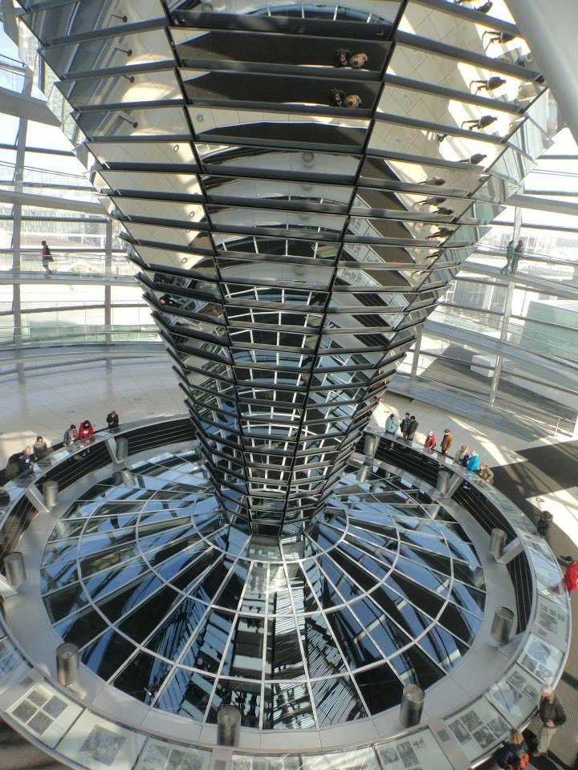
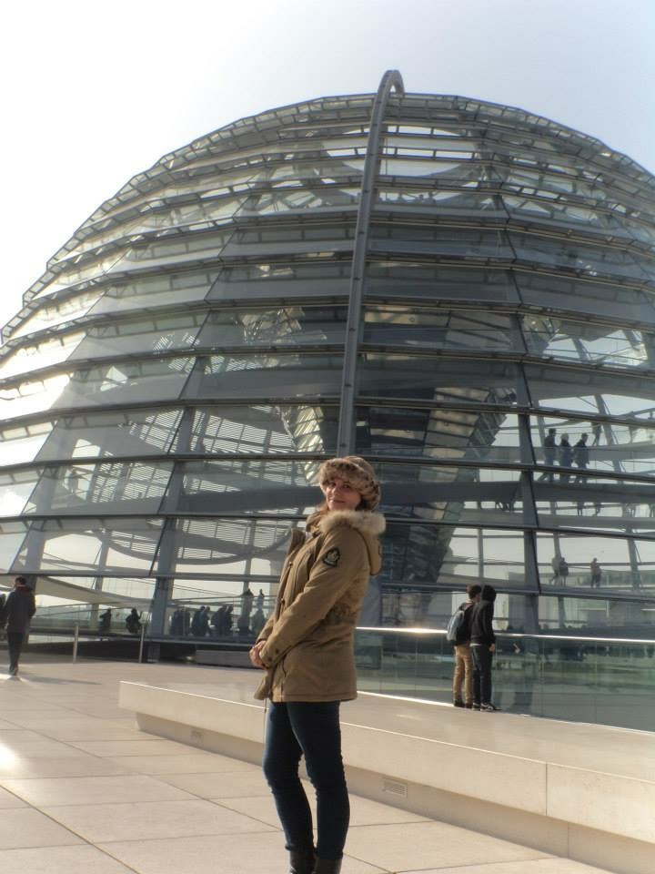
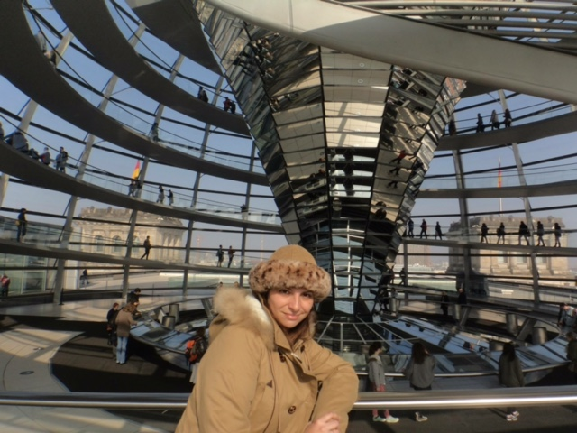
Portão de Brandenburgo
Hoje é o cartão postal mais famosa da cidade e símbolo da unificação alemã. O Portão de Brandenburgo foi construído durante o reinado Friedrich Wilhelm II, da Prússia, como um símbolo da paz. Durante a segunda Guerra mundial, foi bastante danificado. Após a divisão, o muro passava em frente ao portão, que ficou na parte controlada pelos soviéticos e somente seus soldados, podiam se aproximar dele, por isso, virou um símbolo da divisão de Berlim.
Desde 2002, o portão foi fechado para o tráfego de automóveis, somente pedestres podem circular por ele. É uma construção lindíssima! Não é atoa que Napoleão a roubou...
Memorial do Holocausto
Fica próximo ao Portão de Brandenburgo na Cora-berlimer-Straße 1 – Tiergarten. Foi inaugurado em 2005 para homenagear as vítimas do Holocausto. Ele é composto por 2.711 blocos de concreto distribuídos em fileiras paralelas. No memorial, existe uma sala subterrânea, o “Local da Informação”, onde existe uma exposição que mostra detalhes da perseguição aos judeus.
A visita ao memorial é gratuita e os blocos de concreto podem ser acessados por diversos caminhos. O memorial não tem horário para visitação. O “Local da Informação” é aberto das 10:00 as 20:00h nos meses de abril a setembro e das 10:00 as 19:00h de outubro a março.
Potsdamer Platz
É uma área com prédios modernos que oferece muitas opções de lazer. A maior delas é o Sony Center, um complexo com cinema, restaurantes e bares. Vale a visita, tem um teto incrível para tirar fotos!
Outro lugar que vale a visita é a plataforma panorâmica chamada de Panoramapunkt, no prédio Kollhoff Tower, de onde é possível ter uma bela vista de Berlim.
Também nos arredores da Potsdamer Platz, encontra-se a DDR-Wachturm (Torre de Vigilância do Muro de Berlim). É uma das últimas torres de vigilância de onde era feita a segurança ao longo do muro de Berlim. Foi tombada como patrimônio histórico em 2011. É aberta a visitação de terça a domingo, das 11 às 16 horas e custa E$3,50.
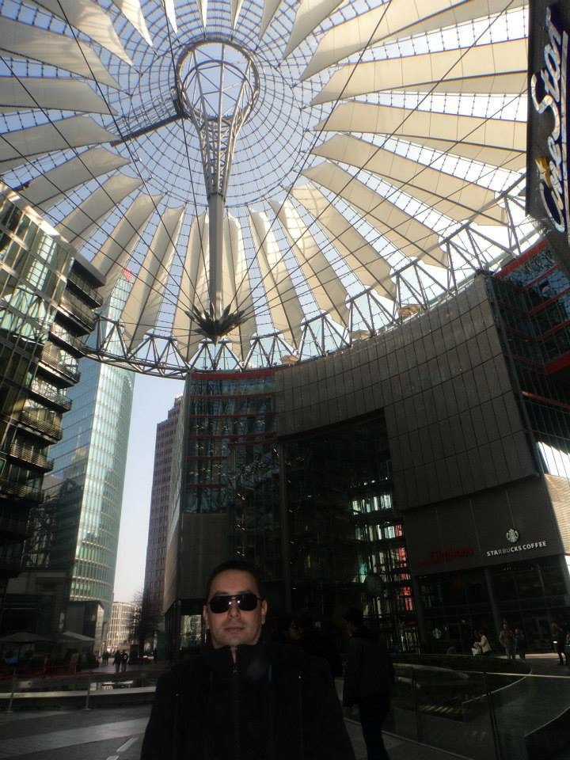
Topografia do Terror
É um museu que mostra os horrores praticados pelos nazistas. O museu conta com painéis com textos, fotos, documentos, artigos de jornal e áudios, que mostram a chegada dos nazistas ao poder e todo terror e sofrimento deixado por eles.
Foi erguido no local onde ficava a Gestapo. Neste local, ainda existe um dos trechos mais longos do muro de Berlim.
É um lugar muito triste, mas não pode deixar de ser visitado. Serve para mostrar que tudo que aconteceu não pode ser esquecido e cair no esquecimento.
Fica localizado na Niederkirchnerstrasse 8, 10963 e sua entrada é gratuita.
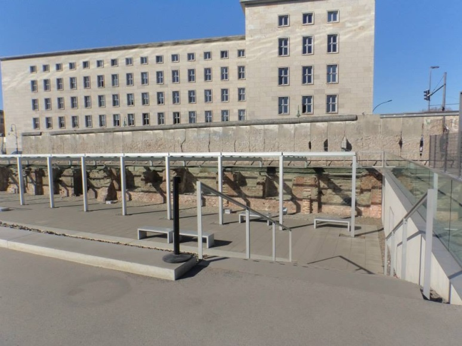
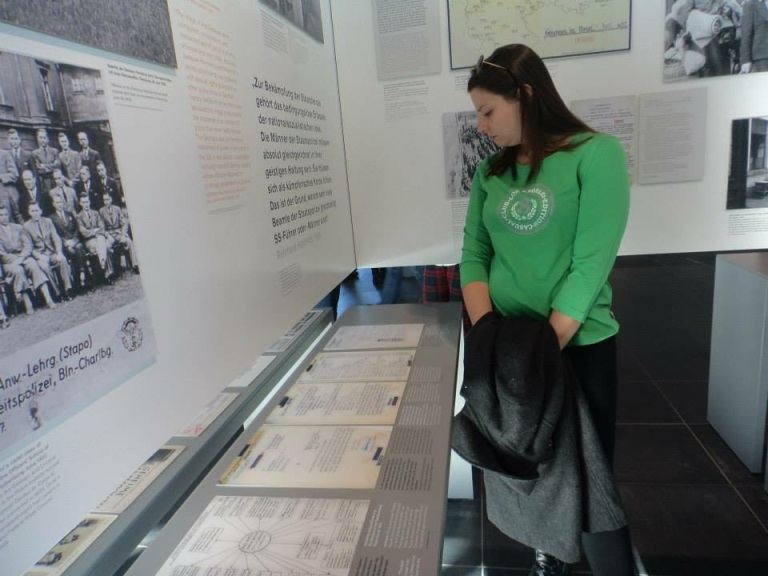
Checkpoint Charlie
Era um posto militar na fronteira entre Berlim Ocidental e Oriental, na época que a cidade era dividida. Era usado somente pelas membros das Forças Aliadas e diplomatas estrangeiros para passar da Alemanha Ocidental para a Alemanha Oriental.
Lá você pode tirar uma foto na plaquinha que informa que “You are leaving the American sector”, foto com os “soldados” e carimbar seu passaporte! Não lembro o valor...
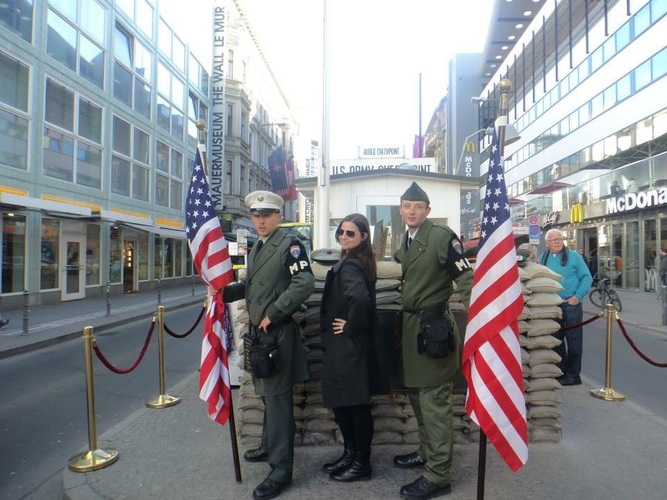
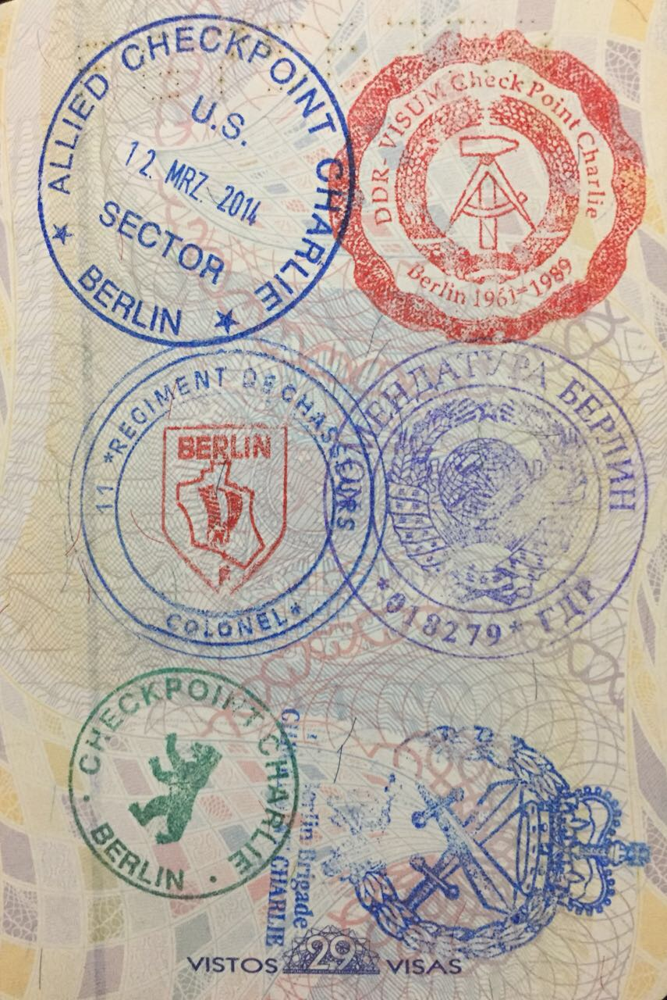
Alexanderplatz e Torre de TV
É uma praça grande e movimentada de Berlim. Nela está o Urania-Weltzeituhr, um relógio que mostra a hora com diversos fusos horários e também a Torre de TV, uma das construções mais altas da Europa e de onde se pode ter uma bela visão de Berlim em 360 graus. Eu subi na Torre da TV e não achei tão interessante, achei a Panoramapunkt mais legal e bem mais barato!
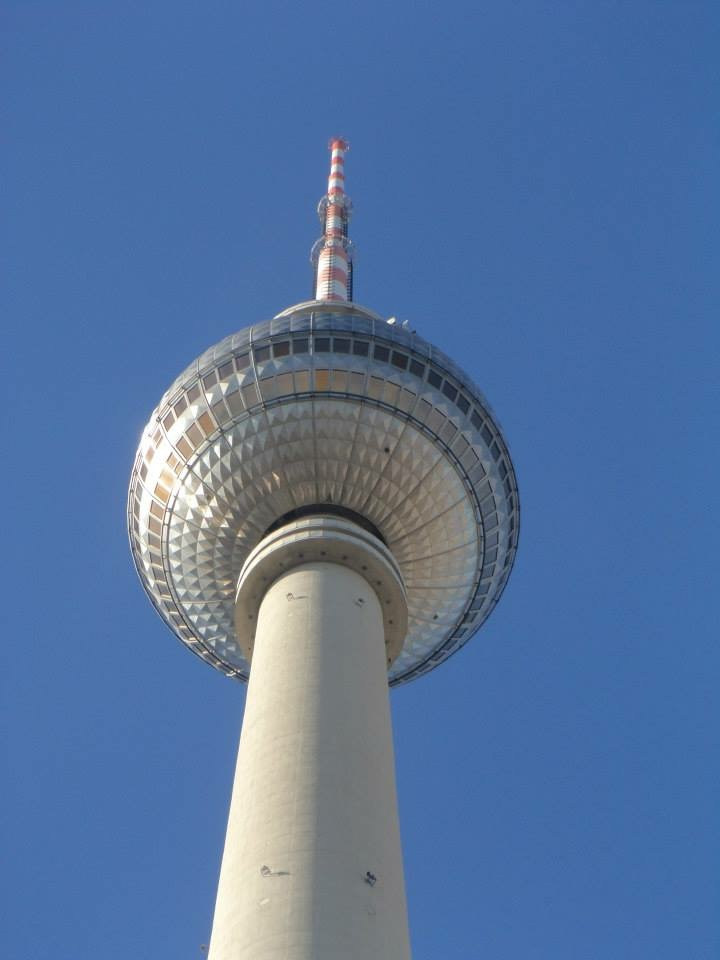
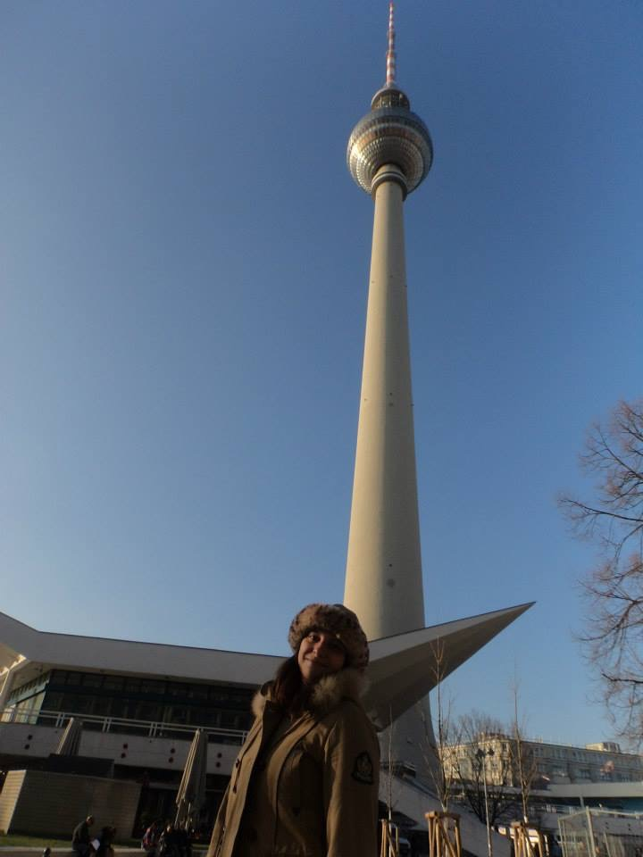
Gendarmenmarkt
A mais bela praça da cidade... É composta por três edifícios: a Casa de Concertos no centro e as Catedrais Francesa e Alemã.
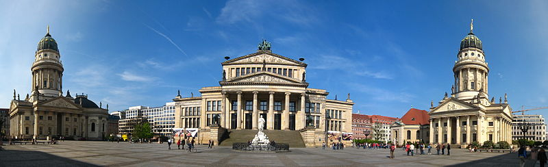
Créditos da imagem: Wikimedia
{kind=link}
Rede de transportes:
O sistema de transporte público em Berlim é excelente. Ele é composto por ônibus, bonde elétrico (tram), U-Bahn e S-Bahn. O mesmo ticket é usado para todos eles. O U-Bahn é o metrô que cobre o centro da cidade e subúrbios próximos ao centro. Já o S-Bahn cruza as fronteiras da cidade, mas possui diversas linhas que também passam no centro da cidade. A identificação das estações começa com letras: U corresponde às estações da U-Bahn, S corresponde às estações da S-Bahn e as que tem um M dentro de quadrados correspondem ao bonde elétrico (tram). Após essa letra de identificação, tem o nome da estação. Clique aqui para acessar o pdf do mapa oficial do sistema de transporte de Berlim.
Quando chegar ao hotel, já peça na recepção, o mapa com os pontos turísticos da cidade. Selecione os locais que deseja visitar e marque a estação de metro/tram mais próxima dele. Depois disso, abra o mapa que disponibilizamos no link acima e veja qual linha irá pegar. Anote os nomes dos destinos finais da linha, para você saber qual direção pegar na ida e na volta. Dito isso, vamos as demais explicações sobre o sistema de transporte público de Berlim.
Existem 3 zonas
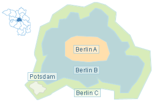 Zona A – centro expandido, Zona B – limite final da cidade (onde também está localizado o aeroporto de Tegel) e Zona C – que vai além dos limites, nos arredores de Berlim (onde estão localizados o Aeroporto berlim-Schönefeld e a cidade de Potsdam). Assim, você deverá optar pelo ticket que melhor lhe atende: AB tickets, BC tickets ou ABC tickets.
Definida a área, você terá que escolher entre:
- Single Ticket
- Grupo de 5 pessoas
- Day ticket: válido para inúmeras viagens durante um dia
- 7 day ticket: válido para inúmeras viagens durante 7 dias
- Tourist Tickets: vem inclusos quando você compra cartões turísticos da cidade, como por exemplo o Berlim CityTour Card e o berlim Welcome Card.
Os preços variam de acordo com a região que escolhida. Adultos pagam o preço normal e crianças menores de 6 anos não pagam. Para saber os preços dos tickets clique aqui. Os tickets podem ser comprados em máquinas nas estações ou dentro dos trams. Não se preocupe, existem diversas opções de idioma, incluindo inglês e espanhol.
Não existem catracas para entrar nas estações do metrô, porém é necessário validar seu ticket antes de iniciar a viagem. A validação é feita numa máquina que fica na entrada do embarque. Se você não validar seu ticket e for pego pelos fiscais, terá de pagar multa...
Não há necessidade de fazer sinal para o ônibus/bonde parar, se tiver gente no ponto o motorista para. Nos trams e onibus, a validação pode ser feita dentro do veículo. Não é necessário validar os tickets comprados diretamente com o motoristado onibus.
Espero que gostem das dicas! Qualquer dúvida ou sugestão entre em contato através de nosso formulário.

Daniele Miranda
Brasileira, engenheira, casada, 33 anos e apaixonada por viajar... Depois de alguns erros e muitos acertos, comecei a dividir minhas experiências com amigos e familiares e, assim surgiu a ideia de criar um Blog para compartilhar momentos, histórias e experiências. E claro, ajudar outros apaixonados por viagens.
Adhuc quaerendum est ne, vis ut harum tantas noluisse, id suas iisque mei. Nec te inani ponderum vulputate, facilisi expetenda has et. Iudico dictas scriptorem an vim, ei alia mentitum est, ne has voluptua praesent.
Sumo euismod dissentiunt ne sit, ad eos iudico qualisque adversarium, tota falli et mei. Esse euismod urbanitas ut sed, et duo scaevola pericula splendide. Primis veritus contentiones nec ad, nec et tantas semper delicatissimi.
Duis sed odio sit amet nibh vulputate cursus a sit amet mauris. Morbi accumsan ipsum velit. Duis sed odio sit amet nibh vulputate cursus a sit amet mauris
Investigationes demonstraverunt lectores legere me lius quod ii legunt saepius. Claritas est etiam processus dynamicus, qui sequitur mutationem consuetudium lectorum.
Typi non habent claritatem insitam; est usus legentis in iis qui facit eorum claritatem.